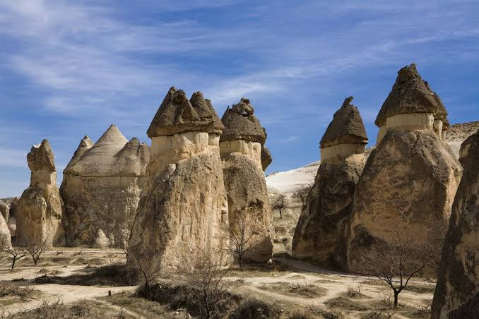
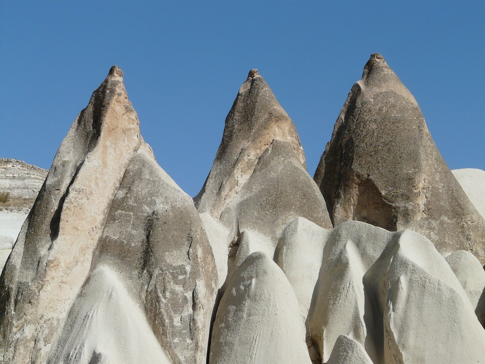
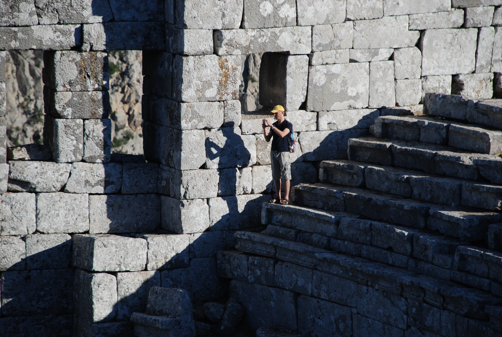

Lycian Way most known trekking trail of Turkey and in voted 10 best trekking routes of the worl. This trekking tour which follows east part of Lycian peninsula offer much more than a trekking tour with it is ancient cities which lies by beatiful coast of Mediterianen, charming villages on the skirts of Taurus mountains.
Alexander the Great passed from this area when he made the big campaign to the east and he fell in love with the area and spend a winter here.You will enjoy scenery of the Olympos national park, which, ancient remains of Olympos city, a river and and a beatiful beach nest together with hormony.


There are 2 best season of this tour.Spring and Autumn. Spring may more spectacular with green grasses, flowers and blue sky. April to June best spring season. September&October more quite and sea is warmer. Possible walk any time of the year on this trail but we recommend spring and autumn.
Program details;
1.Day:Meeting in Kayseri airport. Drive to Goreme.Halfday walking at Pasabağları-Vaftizci Yahya Church-Cavusini.3 hrs relaxed walking best view of Cappadocia.Pension.
2.Day: Akvadi-Uchisar-Guvercinlik.Today we walk 6 hours between spectacular landscape formation.Lunch at Uchisar. Back to the pension.
3.Day: Ayvali-Gomeda-Pancarlik.
4.Day: Underground city.
5.Day: Meskendir-Kizilcukur
We start walking in pine forrest and mostly ascending. Reaching the shepperd cottages with beautiful view of the valley and having lunch packs here.Visiting Old Olympos City on top of Musa Mountain. After 6 hours walking, 17 km, we arrive Adrasan Bay. Max altitude 800 meter. Pension Adrasan.
6.Day: Relaxing day
You can lie at the beach of Adrasan and relax. Or taking a daily boat trip an optional around Adrasan Bay. Pension Adrasan.
7.Day: Adrasan - Gelidonia Lighthouse
Todays walk is one of the most beatiful walks of all trail. It start inside the pineforest fallow blue mediteranean coast.Gelidonia Lighthouse is enchanting and the view from the lighthouse at the break time is great. This cape was very important and the most feared cape of time in ancient times. Today many ancient times wreck lies under the sea and found oldes wreck in the world at this nose. 6 hrs walkig, 17 km. We 45 min. drive back to Adrasan. Pension Adrasan.
8. Day: End of the tour.
Transfer to the Antalya Airport and fly home.
Includeds
- All road transportation after meeting in Antalya Airport.
- Accommodation(pension&hotel)
- Meals
- Sigtseeing, entrance fees writing in the program
- English speaking mountain guide
Excludes
Accommodation
Clients stay in good quality hotel and pension.
Meals
In hotel and pension have traditional Turkish cuisine and vegetarian options, as well as desserts and seasonal fruits.
We prepare lunch pack during trekking days.
Leadership-Guiding
Our guides have Mountain Guide certificates from the Turkish Mountaineering Federation. They have led many groups and will lead you too.
Necessary personel equipments
- Personel suitable clothes
- Light boots
- Hat,sun cream etc.
- Day pack
- Swimming suit!
Bu tur hakkında word dosyası boştu... Bu tur hakkında word dosyası boştu... Bu tur hakkında word dosyası boştu... Bu tur hakkında word dosyası boştu... Bu tur hakkında word dosyası boştu... Bu tur hakkında word dosyası boştu...
Program details;
Bu tur hakkında word dosyası boştu... Bu tur hakkında word dosyası boştu... Bu tur hakkında word dosyası boştu... Bu tur hakkında word dosyası boştu... Bu tur hakkında word dosyası boştu... Bu tur hakkında word dosyası boştu... Bu tur hakkında word dosyası boştu... Bu tur hakkında word dosyası boştu... Bu tur hakkında word dosyası boştu... Bu tur hakkında word dosyası boştu...
Bu tur hakkında word dosyası boştu... Bu tur hakkında word dosyası boştu... Bu tur hakkında word dosyası boştu... Bu tur hakkında word dosyası boştu... Bu tur hakkında word dosyası boştu... Bu tur hakkında word dosyası boştu... Bu tur hakkında word dosyası boştu... Bu tur hakkında word dosyası boştu... Bu tur hakkında word dosyası boştu... Bu tur hakkında word dosyası boştu...
Bu tur hakkında word dosyası boştu... Bu tur hakkında word dosyası boştu... Bu tur hakkında word dosyası boştu... Bu tur hakkında word dosyası boştu... Bu tur hakkında word dosyası boştu...
Bu tur hakkında word dosyası boştu... Bu tur hakkında word dosyası boştu... Bu tur hakkında word dosyası boştu... Bu tur hakkında word dosyası boştu... Bu tur hakkında word dosyası boştu...
Bu tur hakkında word dosyası boştu... Bu tur hakkında word dosyası boştu... Bu tur hakkında word dosyası boştu... Bu tur hakkında word dosyası boştu... Bu tur hakkında word dosyası boştu... Bu tur hakkında word dosyası boştu...
Bu tur hakkında word dosyası boştu... Bu tur hakkında word dosyası boştu... Bu tur hakkında word dosyası boştu... Bu tur hakkında word dosyası boştu... Bu tur hakkında word dosyası boştu... Bu tur hakkında word dosyası boştu...
Lycian Way most known way marked trekking trail of Turkey and in voted 10 best trekking routes of the world. This trekking tour which follows east part of Lycian peninsula offer much more than a trekking tour with it is ancient cities which lies by beatiful coast of Mediterianen, charming villages on the skirts of Taurus mountains.
Alexander the Great passed from this area when he made the big campaign to the east and he fell in love with the area and spend a winter here.You will enjoy scenery of the Olympos national park, which, ancient remains of Olympos city, a river and and a beatiful beach nest together with hormony.
There are 2 best times to walk the Lycian Way. Spring more spectacular with green grasses, flowers and blue sky. March to June is best spring season. September to November more quite and sea is warmer. Possible to walk any time of the year on this trail but we recommend spring and autumn.

.JPG)
Program details;
1.Day:Meeting at the Antalya airport and than 1hr transfer to the hotel in Kemer. Briefing about tour program. Kemer hotel.
2.Day: Göynük to Göynük Yaylasi
15 minutes driving to Goynuk canyon and than start walking from here.We gain 800 m above the canyon and between pine trees. Walks takes aproximetly 6 hours,12 km, ascend. Meeting with our vehicle and drive to hotel.Kemer hotel.
3.Day: Beycik-Mt. Tahtali 2.366 m
After a 40 min. drive we arrive to the Beycik village. We walk in the old forest and between huge cedar trees. We gain 1400 meter and reach to the summit after 4 hrs walking. There is teleferik and cafe on the summit. We go down by teleferik and drive back to Kemer.Phaselis sigtseeing is an option. Hotel Kemer.
4.Day: Ulupinar -Olympos Beach
We are start to walking after 30 min. Transfer to Ulupinar village based near freshwater.Trail fallows the river side and connect to Eternal flame of Chimera. After short rest at here we reach famous Olympos beach. 10 km walk-4 hrs.Chance to have swim and refreshing. Sightseeing around Olympos ruins.Pension Olympos.
5.Day: Olympos - Adrasan
We start walking in pine forrest and mostly ascending. Reaching the shepperd cottages with beautiful view of the valley and having lunch packs here.Visiting Old Olympos City on top of Musa Mountain. After 6 hours walking, 17 km, we arrive Adrasan Bay. Max altitude 800 meter. Pension Adrasan.
6.Day: Relaxing day
You can lie at the beach of Adrasan and relax. Or taking a daily boat trip an optional around Adrasan Bay. Pension Adrasan.
7.Day: Adrasan - Gelidonia Lighthouse
Todays walk is one of the most beatiful walks of all trail. It start inside the pineforest fallow blue mediteranean coast.Gelidonia Lighthouse is enchanting and the view from the lighthouse at the break time is great. This cape was very important and the most feared cape of time in ancient times. Today many ancient times wreck lies under the sea and found oldes wreck in the world at this nose. 6 hrs walkig, 17 km. We 45 min. drive back to Adrasan. Pension Adrasan.
8. Day: End of the tour.
Transfer to the Antalya Airport and fly home.
Includes
- All road transportation after meeting in Antalya Airport.
- Accommodation(pension&hotel)
- Meals
- Sigtseeing, entrance fees writing in the program
- English speaking mountain guide
Accommodation
Clients stay in good quality hotel and pension.
Meals
In hotel and pension have traditional Turkish cuisine and vegetarian options, as well as desserts and seasonal fruits.
We prepare lunch pack during trekking days.
Leadership-Guiding
Our guides have Mountain Guide certificates from the Turkish Mountaineering Federation. They have led many groups and will lead you too.
Necessary personel equipments
- Personel suitable clothes
- Light boots
- Hat,sun cream etc
- Day pack
- Swimming suit!
.JPG)
.JPG)
.JPG)
.JPG)
.JPG)
.JPG)
.JPG)